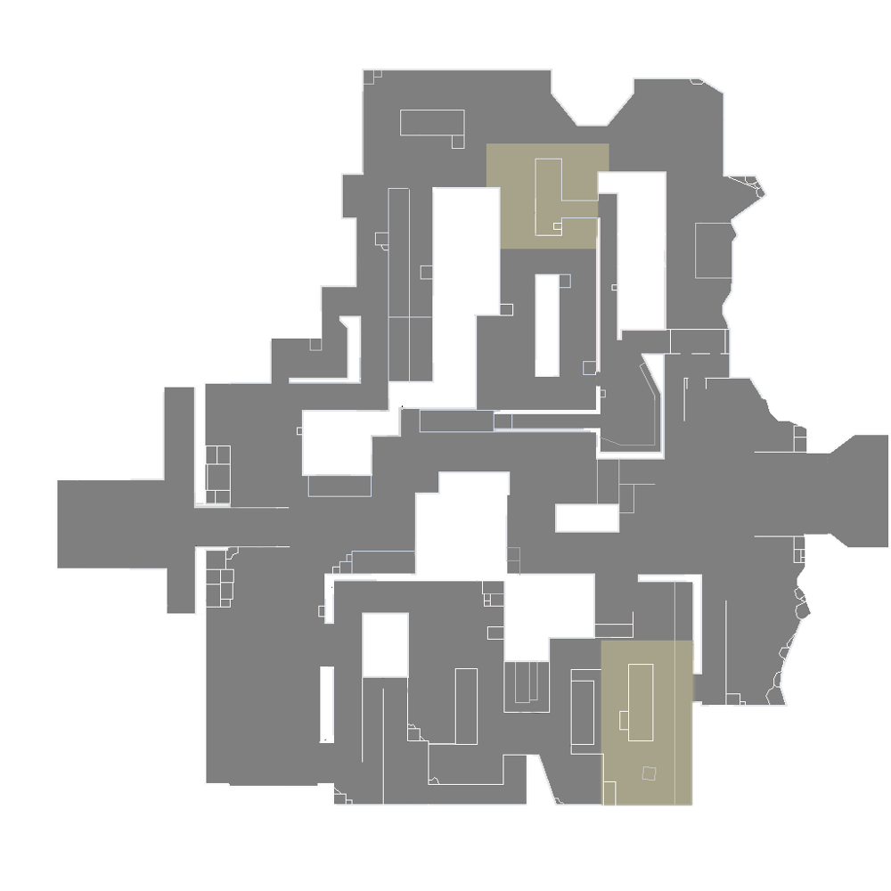
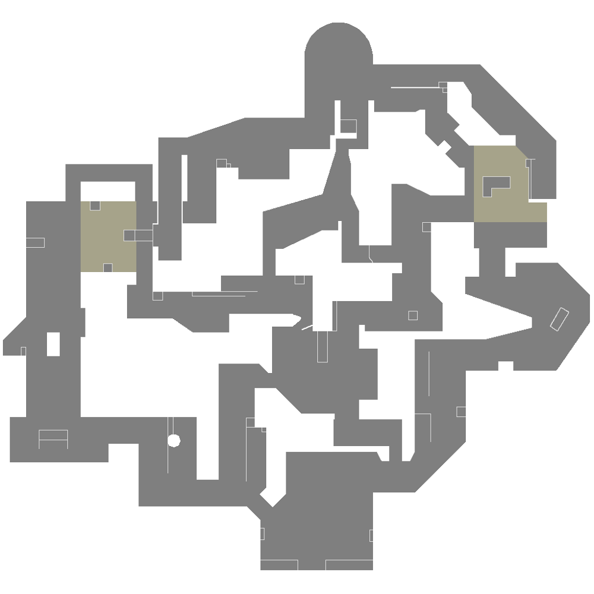

The Range est une carte d'entraînement où les joueurs peuvent tester leurs compétences avec l'événement d'essai de parkour, tester différentes capacités sur chaque agent et essayer différents types d'armes.
Deux sites. Pas de milieu. Vous devez aller à gauche ou à droite. Où irez-vous ? Sur Bind les deux directions proposent des accès directs aux attaquants ainsi que deux téléporteurs à sens unique pour faciliter les contournements.
Sous un monastère oublié, une clameur jaillit tandis que des agents rivaux s'affrontent pour s'emparer de trois sites. Le terrain à contrôler sur Haven est plus grand, mais les défenseurs peuvent se servir des bâtiments supplémentaires pour se montrer plus agressifs.
Dans la vie, si vous voulez aller loin, il faudra d'abord prendre de la hauteur. Les deux sites de Split sont séparés par un centre surélevé qui permet des déplacements rapides grâce à deux ascendeurs en corde. Chaque site possède une gigantesque tour qui est essentielle pour prendre le contrôle de la zone. N'oubliez pas de lever les yeux au ciel avant que tout ne vole en éclats.
Un terrain de jeu ouvert, idéal pour les guerres de position et d'attrition, divise les deux sites d'Ascent. Chacun d'entre eux peut être fortifié par d'épaisses portes de protection. Une fois ces dernières fermées, vous n'aurez pas d'autre choix que de les détruire ou de trouver un autre chemin. Cédez le moins de terrain possible à vos adversaires !

Votre prochain champ de bataille est un site d'excavation secret du Kingdom envahi par les glaces. Les deux installations d'Icebox sont protégées par la neige et le métal demanderont un peu de finesse horizontale. Profitez des tyroliennes, et personne ne vous verra venir.
Dans ce paradis tropical qu'est Breeze, vous aurez tout le loisir d'admirer les vestiges historiques et les grottes marines, mais prévoyez aussi de quoi vous mettre à couvert ; vous en aurez besoin dans les grandes zones dégagées et pour les affrontements à longue distance. Il faut que vos défenses soient solides si vous ne voulez pas qu'on vous les Breeze.
Un centre de recherche confidentiel fractionné par l'échec d'une expérience impliquant de la radianite. Sur Fracture, la stratégie défensive est à l'image de la carte : double. À vous de choisir, allez-vous chercher les attaquants sur leur propre territoire ou fermer les trappes pour retarder leur assaut ?

Les attaquants fondent sur les défenseurs dans le riche décor sous-marin de cette carte en deux sites. Pearl n’a pas de mécanique mais dépend de ses conditions géographiques. Ouvrez le feu dans une mêlée au milieu ou prenez de la distance sur les flancs de notre première carte située sur la Terre Omega.